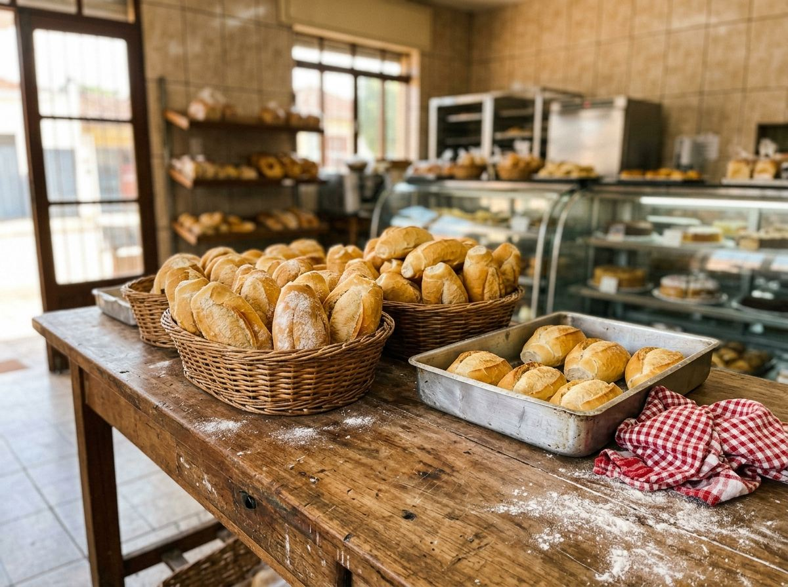

Pão, salgado e lanche na chapa, a partir das 5h30.
Aberto agora
Panificadora no Jardim Paulista, em Olímpia. Monte seu pedido aqui pelo site, envie pelo WhatsApp e retire no balcão ou receba em casa.

Cardápio
Preços do cardápio publicado pela padaria. Toque no + para montar o pedido.
Mini salgados para festa
Bolinha de queijo, coxinha de frango, kibe, risoles de presunto e queijo, esfirra de carne ou de frango, croissant de frango com catupiry ou de presunto e queijo, e churros de doce de leite.
- Cento de mini salgadosR$ 120,00
- Mini salgado, a unidadeR$ 1,75
Combine sabores, quantidade e horário pelo WhatsApp.
Encomendar pelo WhatsAppO que dizem no Google
Quem avalia a Flor do Trigo no Google Maps fala principalmente dos salgados, do pão de queijo, do café e do atendimento.
Com o site, quem procura a padaria no Google encontra o cardápio com preço e já faz o pedido.
4,6de 5, em 240 avaliações
- salgados
- pão de queijo
- café
- doces
- simpatia
- ambiente
Passa aqui
| Segunda a sábado | 5h30 às 19h |
|---|---|
| Domingo | 6h às 12h |
Olímpia - SP